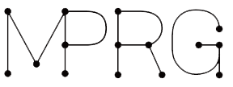

<!DOCTYPE html>
<html>
<head>
<meta charset="UTF-8">
<title>Publications</title>
<link rel="stylesheet" type="text/css" href="./css/style.css">
</head>
<body>

<div id="site-box">
  <div id="header">
    <div id="header-left">
      <a class="cp_link" href="./index.html">Hiroki Adachi's Page</a>
    </div>
    <div id="header-right">
      <a class="cp_link" href="./Publications.html">Publication</a>
      <a class="cp_link" href="./SlideShare.html">SlideShare</a>
    </div>
  </div>

<div id="left-box">
  <center>
    <a href="./index.html"></a>
    <h2>Hiroki Adachi</h2>
    <h5>Robotics Science and Technology at Chubu University</h5>
    
      <p>ha618@mprg.cs.chubu.ac.jp</p>
    <a target="_blank" href="http://mprg.jp/"></a>
    <a target="_blank" href="https://github.com/hirokiadachi"></a>
    <a target="_blank" href="https://www.slideshare.net/ha618"></a>
    <a target="_blank" href="https://twitter.com/hiroki_a618"></a>
  </center>
</div>

<div id="right-box">
  <h1><center>Publications</center></h1>
  <ul>
  <!------------------ International Conference ------------------->
  <li><h2>International Conference</h2></li>
    <ol>
      <li><b>Hiroki Adachi</b>, Hiroshi Fukui, Takayoshi Yamashita, Hironobu Fujiyoshi,
        "Facial Image Generation by Generative Adversarial Networks using Weighed Condtions",
        14th International Conference on Computer Vision Theory and Applications (VISAPP),
        Prague Czech Republic, 2019.</li>
    </ol>
  <!------------------- Domestic Conferecne ----------------------->
  <li><h2>Domestic Conference</h2></li>
    <ol>
      <li><b>足立浩規</b>，福井宏，山下隆義，藤吉弘亘，
          "重みを導入したConditional Generative Adversarial Networkによる顔画像生成の高品質化",
          画像の認識・理解シンポジウム (MIRU), 北海道, 2018.</li><br>
      <li><b>足立浩規</b>，福井宏，山下隆義，藤吉弘亘,
          "重みを導入したConditional Generative Adversarial Networkによる段階的な顔画像生成",
          日本ロボット学会学術講演会 (RSJ), 愛知, 2018.</li><br>
      <li>佐々木一磨, <b>足立浩規</b>, Yifei Huang, 石川裕地, 菊池康太郎, 藤森和希, Li Zhenqiang,
          "【招待ショートサーベイ】実ロボットの知識獲得のためのシミュレーションを用いた転移学習における環境差異の解決",
          電子情報通信学会研究技術報告 パターン認識・メディア理解研究会（PRMU）,
          PRMU2018-68, pp. 5-8, 神奈川, 2018.</li><br>
      <li>今枝 航, <b>足立 浩規</b>, 平川 翼, 山下 隆義, 藤吉 弘亘,
          "Attention機構を導入したCycleGANによる識別に有効なスタイル変換",
          画像の認識・理解シンポジウム (MIRU), 大阪, 2019.</li><br>
    </ol>
  <ul>
</div>
</div>
</body>
</html>
